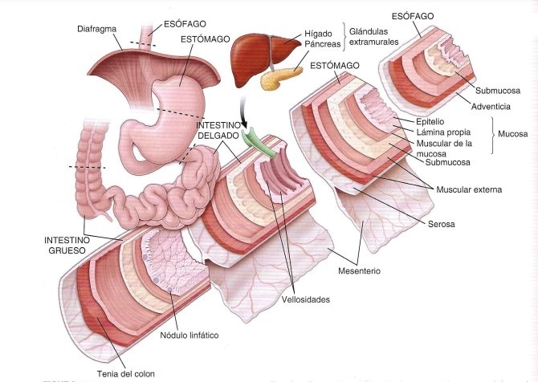
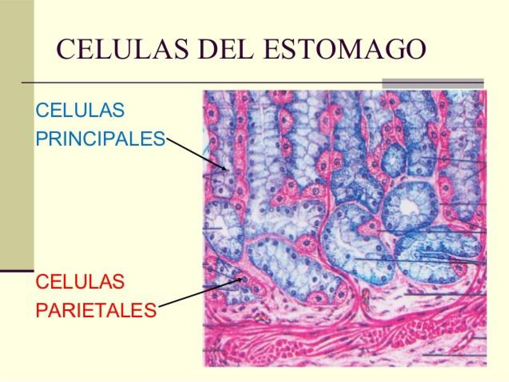
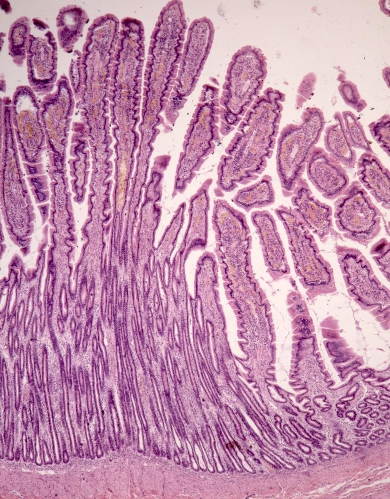
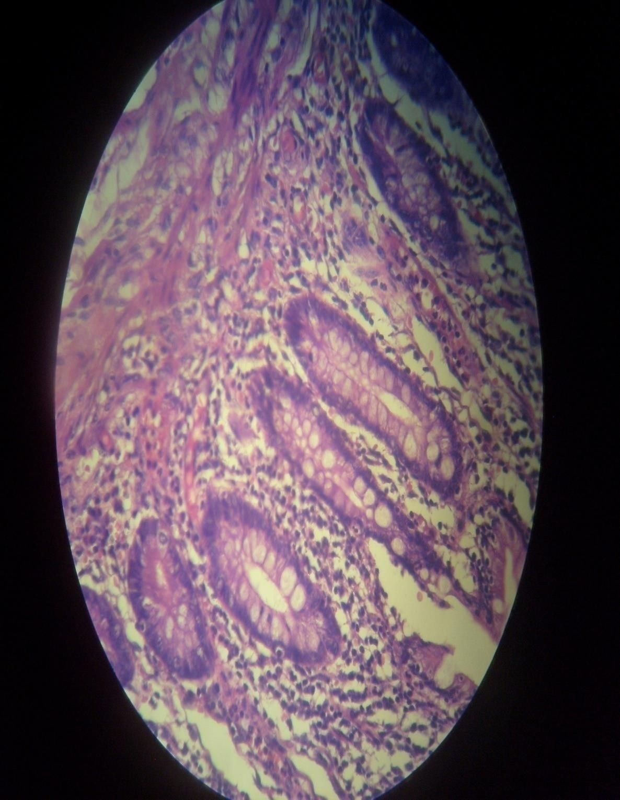
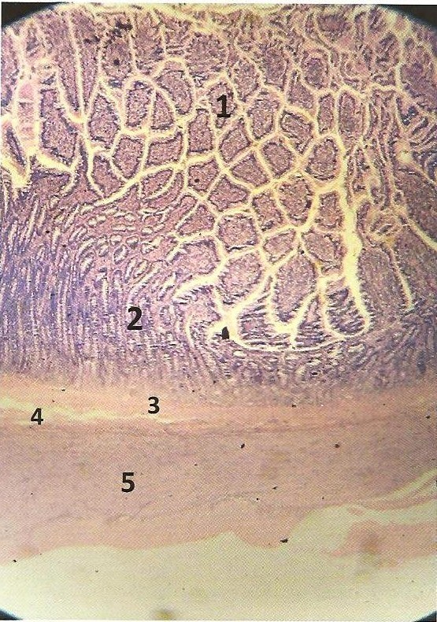
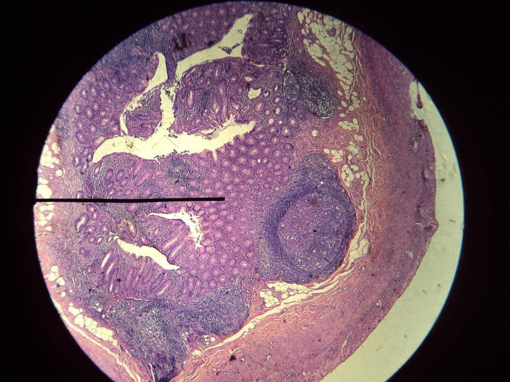
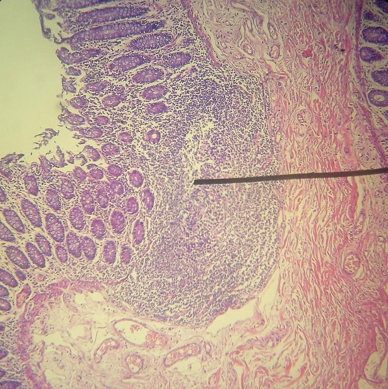

ClinicusMed · Dossiê Clinicus — Padrão de Excelência

| Túnica | Subcamadas | Função |
|---|---|---|
| Mucosa | Epitélio + Lâmina própria (T.C. com glândulas, vasos, GALT) + Muscular da mucosa | Absorção, secreção, proteção — movimenta a mucosa |
| Submucosa | T.C. denso irregular com plexos (Meissner), vasos e, às vezes, glândulas | Suporte e nutrição |
| Muscular Externa | Músculo liso — circular interna + longitudinal externa (± oblíqua) | Mistura e propulsão do conteúdo (peristalse) |
| Serosa/Adventícia | Peritônio (mesotélio+TC) OU adventícia no retroperitônio (só TC) | Fixação e revestimento externo |
Órgão muscular hueco interposto entre faringe e estômago, função de conduzir o bolo alimentar.
| Túnica | Características |
|---|---|
| Mucosa | Epitélio plano estratificado NÃO queratinizado + lâmina própria (T.C. laxo, tecido linfoide) + muscular da mucosa (1 camada de músculo liso) |
| Submucosa | T.C. denso não modelado com vasos, linfáticos, fibras nervosas e corpos ganglionares formando o Plexo de Meissner. Possui glândulas esofágicas tubuloacinosas |
| Muscular | Circular interna + longitudinal externa (LECI). No TERÇO SUPERIOR é músculo estriado esquelético; no resto, liso. Entre as camadas: Plexo Mientérico de Auerbach |
| Adventícia/Serosa | T.C. laxo na porção torácica (adventícia); na porção abdominal vira serosa |
Órgão muscular onde se produz a mistura dos alimentos (quimo). Divide-se histologicamente em 3 regiões conforme o tipo de glândula:
| Região | Glândulas |
|---|---|
| Cárdia | Glândulas cárdicas (secretoras de muco) |
| Fundo/Corpo | Glândulas FÚNDICAS (as mais importantes pra prova) |
| Pilórica (antro) | Glândulas pilóricas |

| Célula da Glândula Fúndica | Secreta |
|---|---|
| Mucosas do colo | Muco solúvel (líquido) |
| Principais (zimogênicas) | Pepsinogênio (enzima) |
| Parietais (oxínticas) | Fator intrínseco + ácido clorídrico (HCl) |
| Enteroendócrinas (G) | Gastrina e outros hormônios (estimula/inibe) |
| Túnica Gástrica | Detalhe |
|---|---|
| Mucosa | Epitélio cilíndrico simples secretor de muco (viscoso/turvo) + lâmina própria com glândulas + muscular da mucosa (circular interna/longitudinal externa) |
| Submucosa | T.C. denso, adiposo, vasos, plexo de Meissner |
| Muscular | 3 camadas: longitudinal externa, circular MÉDIA e oblíqua interna (LECIDI) + plexo de Auerbach |
| Serosa | T.C. laxo + mesotélio |

| Célula da mucosa do ID | Função |
|---|---|
| Absortivas (enterócitos) | Absorção — epitélio cilíndrico com microvilosidades |
| Caliciformes | Secretam muco |
| Células de Paneth | Regulação da flora bacteriana |
| Enteroendócrinas | Hormônios (parecidas com as do estômago) |
| Células-tronco pluripotenciais | Renovação do epitélio |
| Células M | Associadas às placas de Peyer — sistema imunitário |

| Estrutura | Detalhe |
|---|---|
| Pregas circulares (válvulas de Kerckring) | Mais desenvolvidas no jejuno |
| Vilosidades intestinais | Mais numerosas no duodeno e jejuno proximal |
| Criptas de Lieberkühn | Contêm as células de Paneth |
| Submucosa | T.C. denso, plexo de Meissner. SÓ no duodeno: glândulas de Brunner |
| Segmento | Diferencial histológico |
|---|---|
| Duodeno | ÚNICO com glândulas de Brunner na submucosa |
| Jejuno | Válvulas de Kerckring, vilosidades e criptas AUMENTADAS. Muito vascularizado, abundante tecido linfoide |
| Íleon | Vilosidades mais escassas, curtas e estreitas. Folículos linfoides = placas de Peyer, na parede oposta ao mesentério |

Última porção do tubo digestivo, da válvula ileocecal até o ânus. Rico em tecido linfoide pela grande população bacteriana.
| Túnica | Características |
|---|---|
| Mucosa | Lisa, SEM vilosidades. Criptas de Lieberkühn mais longas e retas, SEM células de Paneth. Epitélio cilíndrico alto, muitas células caliciformes |
| Lâmina própria | T.C. reticular rico em tecido linfoide (mas escasso devido às glândulas muito próximas). Folículos linfáticos frequentes, podendo invadir a submucosa |
| Submucosa | T.C. laxo, tecido adiposo, plexo de Meissner |
| Muscular | Circular interna COMPLETA; a longitudinal externa forma 3 faixas = TÊNIAS do colo. Plexo de Auerbach por fora da circular interna |
| Serosa | Mesotélio + T.C. subseroso, com apêndices epiploicos |


Vamos acompanhar um paciente com queixas digestivas progressivas, relacionando o caso à histologia do esôfago, estômago e intestinos. O caso evolui em 3 níveis — clica em cada um pra ver como as coisas vão se desenrolando.
A Clinicus selecionou este conteúdo para complementar seu estudo. Não substitui a leitura do resumo — o resumo ensina, o vídeo reforça.
Carregando recomendações...
O sistema guarda, no seu navegador, quais cards você já sabe bem e quais precisam voltar mais cedo — cada vez que você avalia um card, ele recalcula quando ele deve voltar.
10 questões, do mais básico ao mais puxado. Escolhe uma alternativa, depois clica em "Ver comentário completo" — vale a pena ler até quando você acerta, porque o comentário explica cada alternativa, não só a certa.
Todas as imagens desse capítulo, reunidas num só lugar pra revisão rápida.